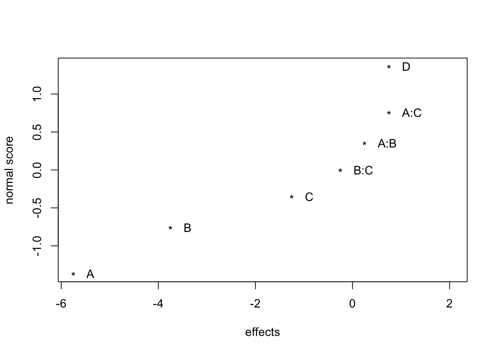
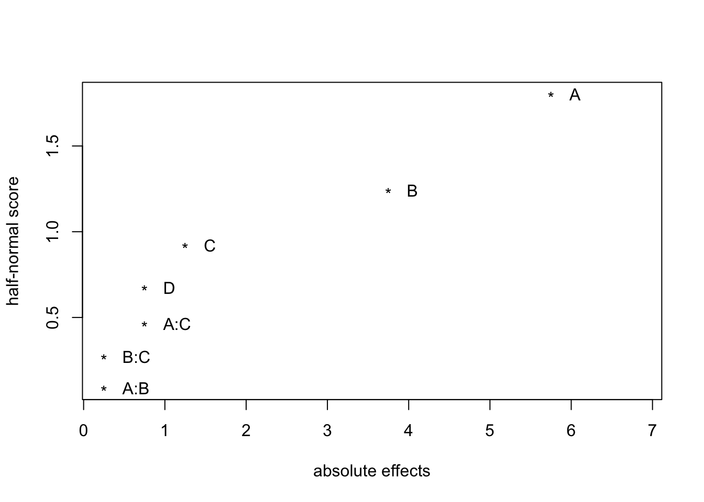
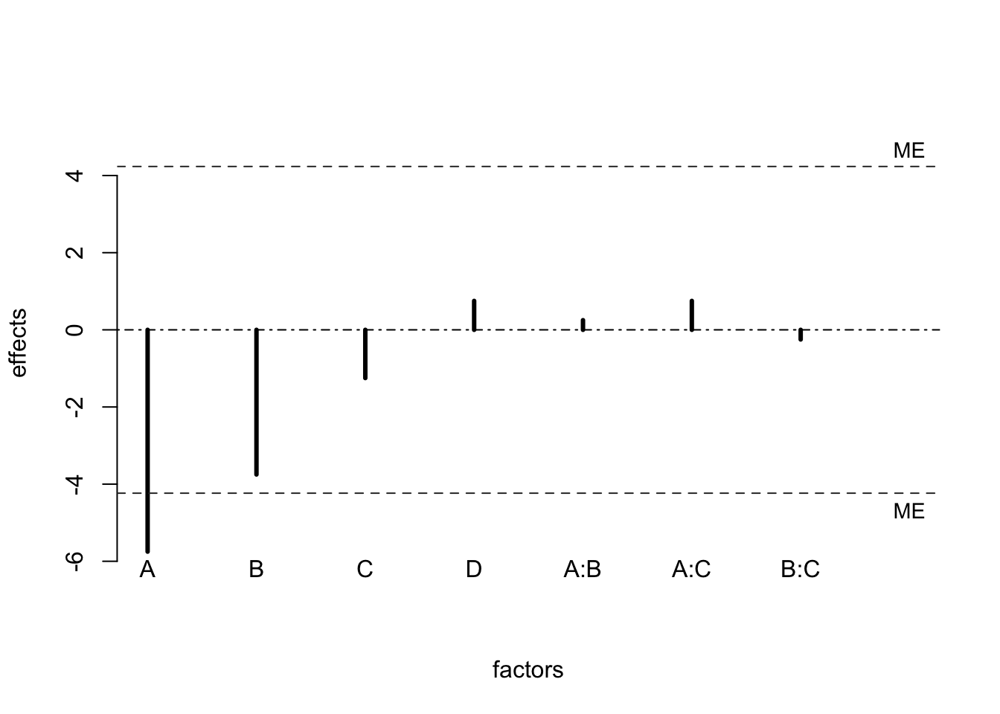
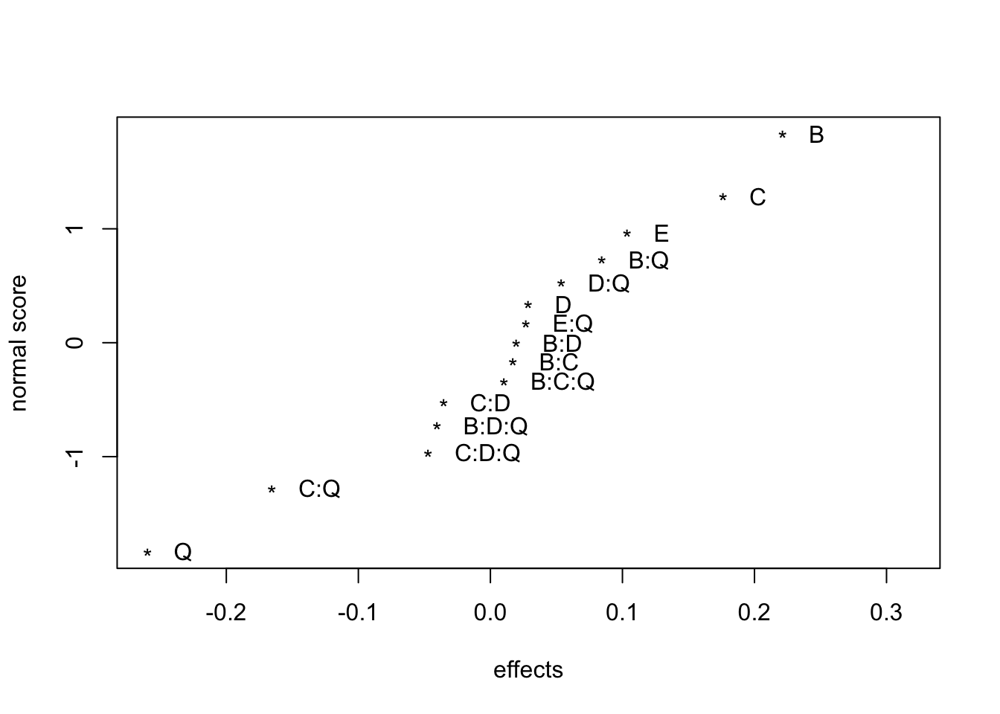
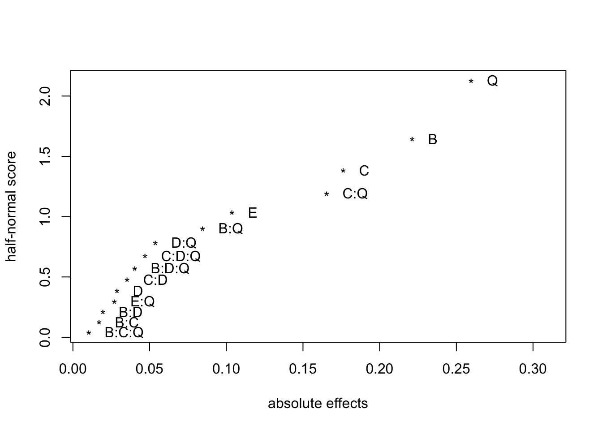
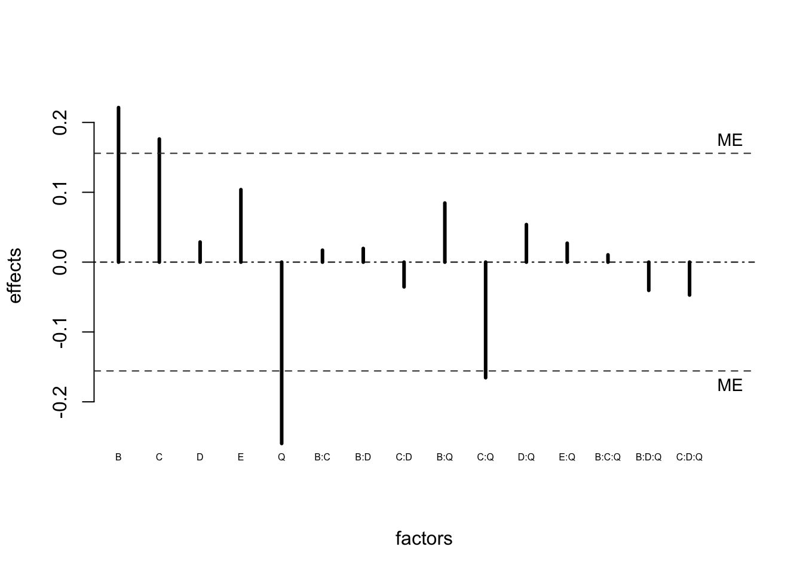

12 Fractional factorial designs
A \(2^k\) full factorial requires \(2^k\) runs. Full factorials are seldom used in practice for large k (k>=7). For economic reasons fractional factorial designs, which consist of a fraction of full factorial designs are used. There are criteria to choose “optimal†fractions.
12.1 Example - Effect of five factors on six properties of film in eight runs
The following example is taken from Box, Hunter, and Hunter (2005).
Five factors were studied in 8 runs. The factors were:
- Catalyst concentration (A)
- Amount of additive (B)
- Amounts of three emulsifiers (C, D, E)
Polymer solutions were prepared and spread as a film on a microscope slide. Six different responses were recorded.
| run | A | B | C | D | E y | 1 y | 2 y | 3 y | 4 y | 5 y | 6 |
|---|---|---|---|---|---|---|---|---|---|---|---|
| 1 | -1 | -1 | -1 | 1 | -1 | no | no | yes | no | slightly | yes |
| 2 | 1 | -1 | -1 | 1 | 1 | no | yes | yes | yes | slightly | yes |
| 3 | -1 | 1 | -1 | -1 | 1 | no | no | no | yes | no | no |
| 4 | 1 | 1 | -1 | -1 | -1 | no | yes | no | no | no | no |
| 5 | -1 | -1 | 1 | -1 | 1 | yes | no | no | yes | no | slightly |
| 6 | 1 | -1 | 1 | -1 | -1 | yes | yes | no | no | no | no |
| 7 | -1 | 1 | 1 | 1 | -1 | yes | no | yes | no | slightly | yes |
| 8 | 1 | 1 | 1 | 1 | 1 | yes | yes | yes | yes | slightly | yes |
The eight run design was constructed beginning with a standard table of signs for a \(2^3\) design in the factors A, B, C.
The column of signs associated with the BC interaction was used to accommodate factor D, the ABC interaction column was used for factor E.
A full factorial for the five factors A, B, C, D, E would have needed \(2^5 = 32\) runs.
Only 1/4 were run. This design is called a quarter fraction of the full \(2^5\) or a \(2^{5-2}\) design (a two to the five minus two design). In general a \(2^{k-p}\) design is a \(\frac{1}{2^p}\) fraction of a \(2^k\) design using \(2^{k-p}\) runs.
12.2 Effect Aliasing and Design Resolution
A chemist in an industrial development lab was trying to formulate a household liquid product using a new process. The liquid had good properties but was unstable. The chemist wanted to synthesize the product in hope of hitting conditions that would give stability, but without success. The chemist identified four important influences: A (acid concentration), B (catalyst concentration), C (temperature), D (monomer concentration). His 8 run fractional factorial design is shown below.
| test | A | B | C | D | y |
|---|---|---|---|---|---|
| 1 | -1 | -1 | -1 | -1 | 20 |
| 2 | 1 | -1 | -1 | 1 | 14 |
| 3 | -1 | 1 | -1 | 1 | 17 |
| 4 | 1 | 1 | -1 | -1 | 10 |
| 5 | -1 | -1 | 1 | 1 | 19 |
| 6 | 1 | -1 | 1 | -1 | 13 |
| 7 | -1 | 1 | 1 | -1 | 14 |
| 8 | 1 | 1 | 1 | 1 | 10 |
The signs of the ABC interaction is used to accommodate factor D. The tests were run in random order. He wanted to achieve a stability value of at least 25.
The factorial effects and Normal, half-Normal, and Lenth plots are below.
library(FrF2)
fact.prod <- lm(y~A*B*C*D,data = tab0602)
fact.prod1 <- aov(y~A*B*C*D,data = tab0602)
round(2*fact.prod$coefficients,2)(Intercept) A B C D A:B
29.25 -5.75 -3.75 -1.25 0.75 0.25
A:C B:C A:D B:D C:D A:B:C
0.75 -0.25 NA NA NA NA
A:B:D A:C:D B:C:D A:B:C:D
NA NA NA NA 


alpha PSE ME SME
0.050000 1.125000 4.234638 10.134346 Even though the stability never reached the desired level of 25, two important factors, A and B, were identified. This Normal and half-Normal plots indicate the importance of these factors, although factor B is not significant according to the Lenth plot.
What information could have been obtained if a full \(2^5\) design had been used?
| Factors | Number of effects |
|---|---|
| Main | 5 |
| 2-factor | 10 |
| 3-factor | 10 |
| 4-factor | 5 |
| 5-factor | 1 |
There are 31 degrees of freedom in a 32 run design. But, are 16 used for estimating three factor interactions or higher. Is it practical to commit half the degrees of freedom to estimate such effects? According to effect hierarchy principle three-factor and higher not usually important. Thus, using full factorial wasteful. It’s more economical to use a fraction of full factorial design that allows lower order effects to be estimated.
Consider a design that studies five factors in 16 run. A half fraction of a \(2^5\) or \(2^{5-1}\).
| Run | B | C | D | E | Q |
|---|---|---|---|---|---|
| 1 | -1 | 1 | 1 | -1 | -1 |
| 2 | 1 | 1 | 1 | 1 | -1 |
| 3 | -1 | -1 | 1 | 1 | -1 |
| 4 | 1 | -1 | 1 | -1 | -1 |
| 5 | -1 | 1 | -1 | 1 | -1 |
| 6 | 1 | 1 | -1 | -1 | -1 |
| 7 | -1 | -1 | -1 | -1 | -1 |
| 8 | 1 | -1 | -1 | 1 | -1 |
| 9 | -1 | 1 | 1 | -1 | 1 |
| 10 | 1 | 1 | 1 | 1 | 1 |
| 11 | -1 | -1 | 1 | 1 | 1 |
| 12 | 1 | -1 | 1 | -1 | 1 |
| 13 | -1 | 1 | -1 | 1 | 1 |
| 14 | 1 | 1 | -1 | -1 | 1 |
| 15 | -1 | -1 | -1 | -1 | 1 |
| 16 | 1 | -1 | -1 | 1 | 1 |
The factor E is assigned to the column BCD. But, the column for E is used to estimate the main effect of E and also for BCD. So, this design cannot distinguish between E and BCD. The main factor E is said to be aliased with the BCD interaction.
This aliasing relation is denoted by \[E = BCD \thinspace or \thinspace I = BCDE,\] where \(I\) denotes the column of all +’s.
This uses same mathematical definition as the confounding of a block effect with a factorial effect. Aliasing of the effects is a price one must pay for choosing a smaller design.
The \(2^{5-1}\) design has only 15 degrees of freedom for estimating factorial effects, it cannot estimate all 31 factorial effects among the factors B, C, D, E, Q.
The equation \(I = BCDE\) is called the defining relation of the \(2^{5-1}\) design. The design is said to have resolution IV because the defining relation consists of the “word†BCDE, which has “length†4.
Multiplying both sides of \(I = BCDE\) by column B \[B = B \times I = B \times BCDE = CDE\], the relation \(B = CDE\) is obtained. B is aliased with the CDE interaction. Following the same method all 15 aliasing relations can be obtained.
\[B = CDE, C = BDE, D = BCE, E = BCD, \\ BC = DE, BD = CE, BE = CD, \\ Q = BCDEQ, BQ = CDEQ, CQ = BDEQ, DQ = BCEQ, \\ EQ = BCDQ, BCQ = DEQ, BDQ = CEQ, BEQ = CDQ\]
Each of the four main effects \(B, C, D, E\) is respectively aliased with \(CDE, BDE, BCE,BCD\). Therefore, the main effects of \(B,C,D,E\) are estimable only if the aforementioned three-factor interactions are negligible. The other factorial effects have analogous aliasing properties.
12.3 Example - Leaf Spring Experiment
The following example is from Wu and Hamada (2009). An experiment to improve a heat treatment process on truck leaf springs. The heat treatment that forms the camber in leaf springs consists of heating in a high temperature furnace, processing by forming a machine , and quenching in an oil bath. The free height of an unloaded spring has a target value around 8in. The goal of the experiment is to make the variation about the target as small as possible.
Five factors were studied in this \(2^{5-1}\) design.
| Factor | Level |
|---|---|
| B. Temperature | 1840 (-), 1880 (+) |
| C. Heating time | 23 (-), 25 (+) |
| D. Transfer time | 10 (-), 12 (+) |
| E. Hold down time | 2 (-), 3 (+) |
| Q. Quench oil temperature | 130-150 (-), 150-170 (+) |
| B | C | D | E | Q | y |
|---|---|---|---|---|---|
| -1 | 1 | 1 | -1 | -1 | 7.7900 |
| 1 | 1 | 1 | 1 | -1 | 8.0700 |
| -1 | -1 | 1 | 1 | -1 | 7.5200 |
| 1 | -1 | 1 | -1 | -1 | 7.6333 |
| -1 | 1 | -1 | 1 | -1 | 7.9400 |
| 1 | 1 | -1 | -1 | -1 | 7.9467 |
| -1 | -1 | -1 | -1 | -1 | 7.5400 |
| 1 | -1 | -1 | 1 | -1 | 7.6867 |
| -1 | 1 | 1 | -1 | 1 | 7.2900 |
| 1 | 1 | 1 | 1 | 1 | 7.7333 |
| -1 | -1 | 1 | 1 | 1 | 7.5200 |
| 1 | -1 | 1 | -1 | 1 | 7.6467 |
| -1 | 1 | -1 | 1 | 1 | 7.4000 |
| 1 | 1 | -1 | -1 | 1 | 7.6233 |
| -1 | -1 | -1 | -1 | 1 | 7.2033 |
| 1 | -1 | -1 | 1 | 1 | 7.6333 |
The factorial effects are estimated as before.
library(FrF2)
fact.leaf <- lm(y~B*C*D*E*Q,data = leafspring)
fact.leaf2 <- aov(y~B*C*D*E*Q,data = leafspring)
round(2*fact.leaf$coefficients,2)(Intercept) B C D E Q
15.27 0.22 0.18 0.03 0.10 -0.26
B:C B:D C:D B:E C:E D:E
0.02 0.02 -0.04 NA NA NA
B:Q C:Q D:Q E:Q B:C:D B:C:E
0.08 -0.17 0.05 0.03 NA NA
B:D:E C:D:E B:C:Q B:D:Q C:D:Q B:E:Q
NA NA 0.01 -0.04 -0.05 NA
C:E:Q D:E:Q B:C:D:E B:C:D:Q B:C:E:Q B:D:E:Q
NA NA NA NA NA NA
C:D:E:Q B:C:D:E:Q
NA NA Notice that the factorial effects are missing for effects that are aliased. The Normal, half-Normal, and Lenth plots are below.



alpha PSE ME SME
0.0500000 0.0606000 0.1557773 0.3162503 References
Box, George EP, J Stuart Hunter, and William Gordon Hunter. 2005. Statistics for Experimenters: Design, Innovation, and Discovery. Vol. 2. Wiley-Interscience New York.